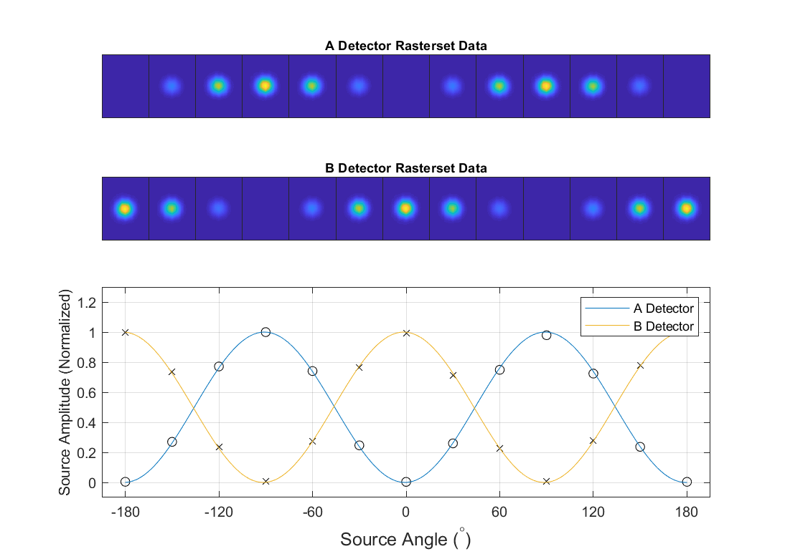
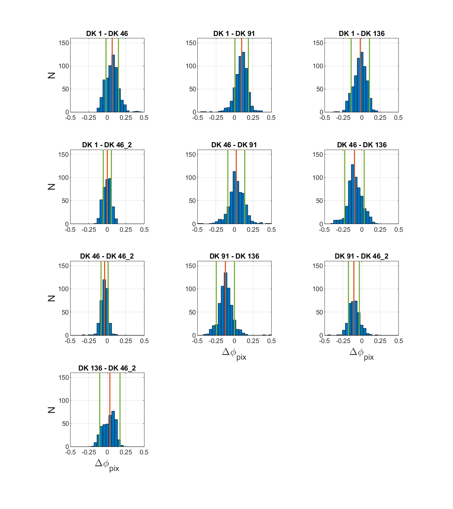
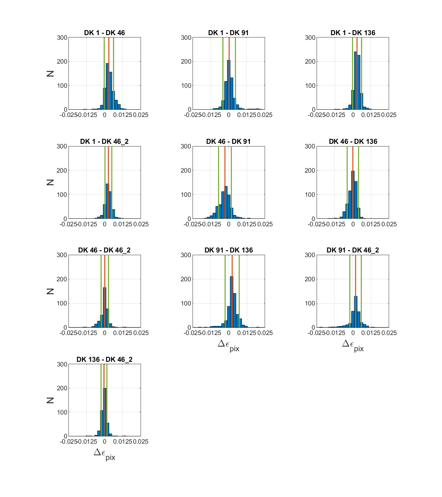
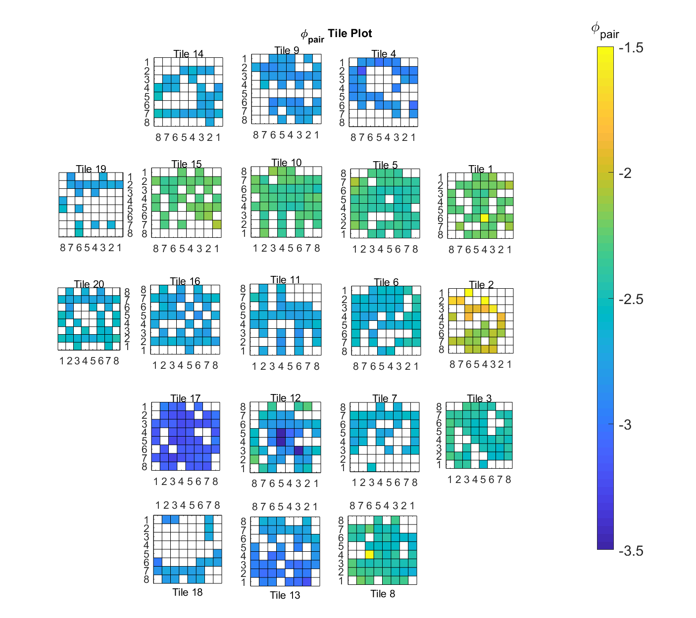
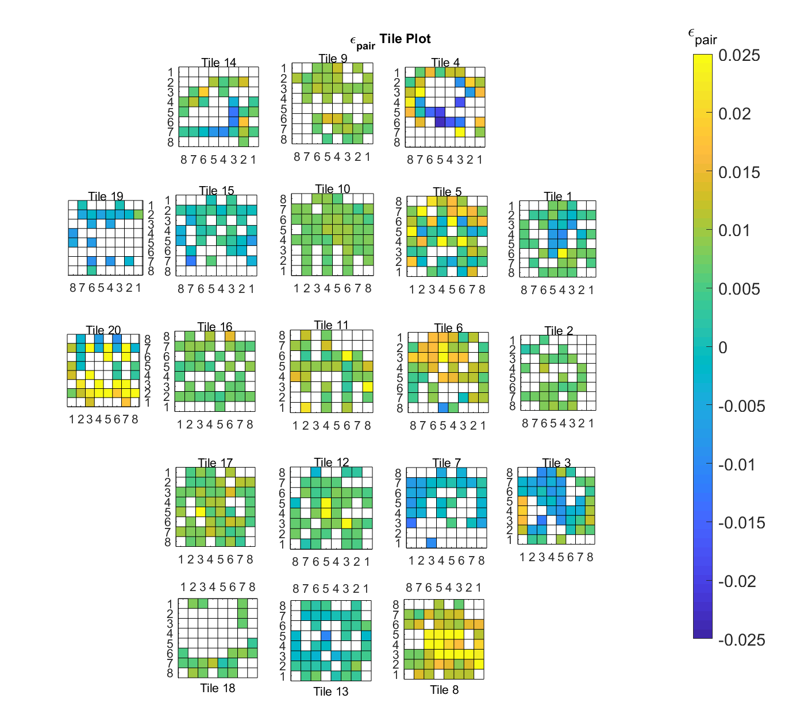
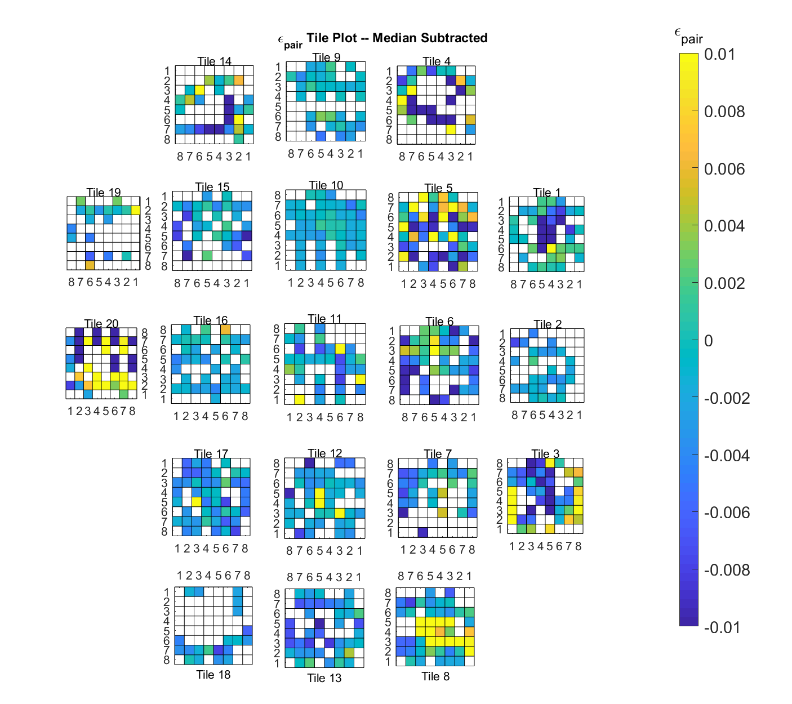

Adding a Chern-Simons term to the EM Lagrangian results in Uniform Cosmic Birefringence
Means: the speed of circularly polarized light changes depending on pol. direction
For linearly pol. light, polarization orientation rotates as it propogates
We'll see larger rotation $\alpha$ the longer it propagates
CMB is perfect for this sort of observation.
$\alpha$ is degenerate with instrumental rotation $\Delta \phi$
Constraining $\alpha$ requires calibrating the instrument rotation.
Rich history of constraints on UCB, but we think we can do better (Table 1).
Far Field Polarization Measurements
Setup
We map polarization response in the far-field using a Rotating Polarized Source (RPS) which is an electrically
chopped, non-thermal, broad spectrum noise source (BSNS) fixed to a precision rotation stage and finely
polarized using a wire grid.
The RPS is deployed atop a 12m mast on the Martin A. Pomerantz Observatory and observed by BICEP3 in the Dark
Sector Laboratory 211m away (The far-field of BICEP3 is $\sim180$m).
Even atop the mast, the RPS is well below BICEP3's normal elevation range so a flat, beam-filling,
aluminum-honeycomb mirror is installed at a $45^\circ$ tilt to redirect rays onto the horizon when the telescope
is pointed at zenith.
The forebaffle which during normal operation terminates the sidelobes is removed to accomodate the installation
of the redirecting mirror.
The RPS is housed within an environmental enclosure and PID temperature controlled to ensure stability on the
output.
The environmental enclosure is equipped with high-visibility tabs on each side to allow for precise alignment
($<1^\circ$) with the telescope.
We reference the polarization orientation of the source to zenith using a precision tilt meter installed
alongside the source within the environmental enclosure.
The tilt of the source is zeroed and locked in using guy wires on the mast to which it is fixed.
Because the horizon is thermally bright, the RPS is chopped at 20 Hz and demodulated during analysis to isolate
the signal from the surrounding area.
Images of a typical RPS setup.
Left: RPS deployed atop a 40ft mast which is observed by reflecting rays off of an aluminum honeycomb flat mirror (Middle-Left).
Middle-Right: RPS benchtop setup - BBNS with absorptive shroud and wire grid secured to a precision rotation stage.
Right: Zoomed image of the RPS installed in its environmental encloser shows alignment strips allows for precise pointing alignment ($<1^\circ$) with the telescope.
Observations
We capture the polarization coupling between the telescope and source by rotating the source over a full $360^\circ$ of rotation.
With the RPS fixed at one polarization angle, we map polarized beams by rastering across the source $9^\circ$ in azimuth at $1.5^\circ/s$ and step up to $2^\circ$ in elevation in $0.1^\circ$ steps.
A full RPS observation, called a rasterset, consists of 13 separate rasters where the RPS is commanded from $-180^\circ$ to $180^\circ$ in $30^\circ$ increments.
This scan strategy allows us to sufficiently map the entire focal plane with multiple samples per beam over all source angles between cryogenic cycling.
An example of the modulation curve as a function of RPS angle is shown in Fig. ??.
Rasters are have very high signal-to-noise with a median SNR of $\sim6000$ at maximum amplitude.
An example RPS raster.
Rasters are $9^\circ \times 2^\circ$ in azimuth and elevation respectively with $0.1^\circ$ steps in elevation.
Rasters are have very high signal-to-noise at the detector level with a median SNR of $\sim6000$ at maximum amplitude.

Top: Beam maps of individual RPS rasters from a rasterset for a single detector and resulting modulation curve as a function of source command angle (bottom)
Dataset
The RPS observations used in this analysis were taken in January and February of 2018. Five observations were taken over four boresight angles of $1.25^\circ$, $46.25^\circ$, $91.25^\circ$, $136.25^\circ$ with and extra observation taken at $46.25^\circ$. The BICEP3 focal plane is clocked $1.25^\circ$ WRT the $DK=0^\circ$ and so we add $1.25^\circ$ to ensure maximum polarization coupling to the source. Observations over multiple boresight angles provides a consistency check of our measurement repeatability.
Polarization Parameters
This section outlines the process through which we estimate polarization parameters.
To summarize, for each detector we fit a 2-D elliptical Gaussian profile across all rasters in a rasterset
simultaneously.
The resulting amplitudes as a function of source angle are fit to polarization response model.
Finally, the polarization parameters of the two orthogonal detectors corresponding to a single pixel are
combined into a per-pixel polarization angle and cross-polarization response.
We fit a 2-D elliptical Gaussian profile across all beams in a rasterset simultaneously where the beam amplitude
$A$ is a free parameter for each raster but the beam center $(x_0\,\,y_0)$, beam widths $(\sigma_x,\,\sigma_y)$,
and correlation coefficient $\rho$ are single parameters fit across the entire rasterset.
\begin{equation}
B_i(\mathbf{x}) = A_i e^{(\mathbf{x}-\mathbf{\mu})^T\Sigma^{-1}(\mathbf{x}-\mathbf{\mu})}
\end{equation}
Where $\mathbf{\mu} = (x_0\,\,y_0)$ is the beam center and
\begin{equation}
\Sigma =
\begin{bmatrix} \sigma_x^2& \rho \sigma_x \sigma_y \\ \rho \sigma_x \sigma_y & \sigma_y^2 \end{bmatrix}
\end{equation}
This is to mitigate bad fits when the RPS and detector are $90^\circ$ out of phase and the constraining power on
the beam is poor.
The array of amplitudes $A$ resulting from the Gaussian fits produces a modulation curve as a function of source
angle $\theta$.
We fit a sinusoidal polarization response function to the modulation curves of the form
\begin{equation}
A(\theta) = G\left(\cos\left(2\left(\theta+\psi\right)\right)\right)\left(N_1\cos(\theta)+N_2\sin(\theta)\right)
\end{equation}
where $G$ is the gain of the detector, $\psi$ is the detector polarization angle with respect to the source,
$\epsilon$ is the detector cross-polarization response, and ($N_1,\,N_2$) are nuisance parameters describing a
miscollimation of the source rotation axis.
We relate the detector polarization angle to the telescope zero $\phi$ by subtracting the polarization
orientation of the source with respect to the telescope $\phi_s$
\begin{equation}
\phi_d = \psi - \phi_s
\end{equation}
which is computed through the pointing model described ...
%\subsection{Per-pixel Polarization Parameters}
Finally, we compute the polarization parameters of a pixel.
For a pair of detectors A and B, the response in Stokes Q and U of the pixel is calculated as
\begin{equation}\label{eq:QU}
\begin{split}
&Q =
\frac{\left[\cos(2\phi_A)-\epsilon_A\cos(2\phi_A)\right]-\left[\cos(2\phi_B)-\epsilon_B\cos(2\phi_B)\right]}{2+\epsilon_A+\epsilon_B}\\
&\\
&U =
\frac{\left[\sin(2\phi_A)-\epsilon_A\sin(2\phi_A)\right]-\left[\sin(2\phi_B)-\epsilon_B\sin(2\phi_B)\right]}{2+\epsilon_A+\epsilon_B}\\
\end{split}
\end{equation}
and the effective per-pixel polarization angle $\phi_p$ and cross-polarization response $\epsilon_p$ is simply
\begin{equation}\label{eq:phiq}
\begin{split}
&\phi_p = \frac{1}{2}\tan^{-1}\frac{U}{Q}\\
&\\
&\epsilon_p = 1-\sqrt{Q^2+U^2}
\end{split}
\end{equation}


Histograms of parameter estimates difference between observed boresight angles. We find the mean systematic repeatability between boresight angles $\sigma_{\phi_{pix}}<0.119^\circ$ and $\sigma_{\epsilon_{pix}}<0.0032^\circ$.
Results



Per-polarization $\phi_{pix}$ and $\epsilon_{pix}$ across the focal plane.
Statistics
FPU Median Per-Tile
FPU Scatter Per-Tile
FPU Median Per-Pixel
FPU Scatter Per-Pixel
Statistical Uncertainty
Systematic Uncertainty
$\phi_{pix} (^\circ)$
-1.20
0.32
-0.03
0.13
0.040
0.119
$\epsilon_{pix}$
0.0069
0.0097
0.0016
0.0084
0.0014
0.0032
Appendix: Extra Plots
Cut Thresholds
Cuts are performed to exclude outliers resulting from poor fits. Cut thresholds are kept "loose" to avoid cutting real statistical outliers. $\mathbf{\Delta x_0,\Delta y_0}$ : Deviations from fit beam centers and observed. $\mathbf{\Delta \epsilon,\Delta \phi}$ : Deviations of per-detector polarization parameters from expected values. Fit: Any fits that were flagged by the fitting function as "Failed" or "Problems" are cut. SNR: The Signal-to-Noise ratio is calculated by dividing the as-fit modulation curve amplitude by the STD of beam map noise floor.